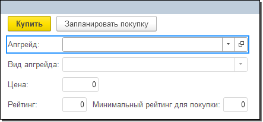

|
|
Рис. 9.11. Изменение заголовка кнопки "ФормаПровестиИЗакрыть" |
Рис. 9.12. Изменение заголовка кнопки "ФормаЗаписать" |
Тема занятия – реализация возможности улучшать магазин.
В рамках этого занятия нам потребуется выполнить 5 задач:
Логика следующая: чтобы больше зарабатывать, необходимо улучшать магазин, а чтобы улучшить магазин, нужно купить апгрейд. Каждый апгрейд имеет свой минимальный порог рейтинга дли приобретения. Поэтому нужно постепенно улучшать магазин, чтобы открывать новые апгрейды и получать больше прибыли.
Первая задача, которую необходимо решить, – это создание механизма для хранения информации о текущем рейтинге. Для этого реализуем константу "Рейтинг игрока", поскольку необходимо хранить только одно значение, а не список.
Добавим новую константу, нажав правой кнопкой мыши по ветке "Константы" и выбрав "Добавить". Имя константы – "РейтингИгрока", тип – "число", длина – 3, точность – 0, неотрицательное (рис. 9.1).
Рис. 9.1. Добавление константы "РейтингИгрока"
В дальнейшем заполнение данной константы будет происходить программно, но сейчас можно вручную зафиксировать текущий рейтинг игрока. Изначально значение константы, то есть рейтинг игрока, равно 0.
Обновим конфигурацию базы данных и запустим пользовательский режим.
Убедимся, что сейчас рейтинг игрока нулевой. Для этого откроем форму константы "Рейтинг игрока" через кнопку "Сервис" (рис. 9.2).
Рис. 9.2. Форма константы "Рейтинг игрока"
На текущий момент это означает, что игрок может приобрести очень ограниченное число апгрейдов для улучшения магазина.
В справочнике "Апгрейды" можно просмотреть весь список доступных для покупки апгрейдов. Текущий рейтинг игрока, равный 0, позволяет купить только апгрейды "Один кассир", "Пеший курьер", "Скидочная карта" и "Миска с водой" (рис. 9.3).
Рис. 9.3. Список апгрейдов
Улучшать магазин будем с помощью отдельного события в системе – "Приобретение апгрейда". Необходимо фиксировать факт того, что игрок приобрел улучшение для магазина.
С одной стороны – это должно быть событие. С другой стороны – это должен быть список улучшений, которые приобретались. Это необходимо, чтобы в дальнейшем анализировать, когда и какое улучшение было приобретено и какое на данный момент улучшение актуально.
Для решения этих задач потребуются два механизма: документ, позволяющий фиксировать события, и регистр сведений.
Закроем пользовательский режим и перейдем в конфигуратор.
Вторая задача в рамках этого занятия будет заключаться в создании документа.
Добавим новый документ, нажав правой кнопкой мыши по ветке "Документы" и выбрав "Добавить". Имя документа – "ПриобретениеАпгрейда" (рис. 9.4).
Рис. 9.4. Добавление документа "ПриобретениеАпгрейда"
Данный документ должен фиксировать, какой апгрейд хочет приобрести игрок. Перейдем на вкладку "Данные" и определим соответствующие реквизиты.
Первый реквизит – "Апгрейд", тип – "СправочникСсылка.Апгрейды" (рис. 9.5).
Рис. 9.5. Добавление реквизита "Апгрейд"
Если сейчас обновить конфигурацию базы данных и запустить пользовательский режим, то можно убедиться, что документ готов не до конца, так как взаимодействовать с ним при текущем уровне настроек неудобно (рис. 9.6).
Сейчас можно и создать документ, и выбрать апгрейд. Но было бы намного удобнее, если бы выносилась информация о том, сколько рейтинга дает приобретаемый апгрейд и какой минимальный рейтинг требуется для его покупки. Вся эта информация есть в карточке апгрейда, которую можно открыть по ссылке (рис. 9.7).
Рис. 9.6. Форма документа "Приобретение апгрейда" |
Рис. 9.7. Просмотр информации об апгрейде по ссылке |
Третья задача сводится к тому, чтобы вынести данные о цене, рейтинге и минимальном требуемом рейтинге игрока в документ. Эту информацию можно прочитать по ссылке, так как апгрейд уже известен. Кроме того, нужно изменить набор кнопок, потому что для пользователя подписи "Провести и закрыть" и "Записать" не ясны.
Для решения данной задачи потребуется реализовать форму.
Закроем пользовательский режим и перейдем в конфигуратор.
На вкладке "Формы" окна редактирования документа определим основную форму документа с помощью кнопки "Добавить". После выбора типа формы нажмем на кнопку "Готово" (рис. 9.8).
Рис. 9.8. Добавление основной формы документа
В окне редактирования формы начнем с того, что изменим содержимое командной панели формы. Для этого отключим автозаполнение (рис. 9.9).
Рис. 9.9. Отключение автозаполнения командной панели
Определить набор команд можно с помощью раздела "Команды", "Стандартные команды". В разделе "Стандартные команды" находятся все команды формы, поскольку форма является отражением механизма "Документ". Определим команды "Провести и закрыть" и "Записать" в раздел "командная панель" (рис. 9.10).
Рис. 9.10. Добавление команд на форму
Для того чтобы пользователь не путался, изменим заголовки. Команды отображены на форме в виде кнопок, следовательно, изменять заголовки нужно именно у кнопок.
Для кнопки "ФормаПровестиИЗакрыть" укажем заголовок "Купить", а также поставим галочку в свойстве "КнопкаПоУмолчанию", чтобы визуально выделить кнопку для пользователя (рис. 9.11). В качестве заголовка для кнопки "ФормаЗаписать" укажем "Запланировать покупку" (рис. 9.12).
|
|
Рис. 9.11. Изменение заголовка кнопки "ФормаПровестиИЗакрыть" |
Рис. 9.12. Изменение заголовка кнопки "ФормаЗаписать" |
Далее необходимо убрать поля "Номер" и "Дата" с формы, так как для игрока они будут лишними.
Чтобы удалить поля, необходимо выделить их и либо нажать на крестик, либо на клавишу Delete на клавиатуре (рис. 9.13).
Рис. 9.13. Удаление лишних элементов формы
Информацию о виде апгрейда, его цене, рейтинге, который он дает, и минимальном рейтинге для покупки можно проанализировать по ссылке из реквизита "Апгрейд".
Перейдем на вкладку "Реквизиты" и развернем список всех реквизитов объекта (рис. 9.14).

Рис. 9.14. Список всех реквизитов объекта
Здесь отображаются все стандартные реквизиты документа, а также те реквизиты, которые были созданы на вкладке "Данные" окна редактирования.
Среди них есть и реквизит "Апгрейд". Для того чтобы добавить необходимую информацию на форму, нажмем на плюсик напротив реквизита "Апгрейд", выделим реквизиты "ВидАпгрейда", "Цена", "Рейтинг" и "МинимальныйРейтингДляПокупки" и перенесем их на форму (рис. 9.15).

Рис. 9.15. Добавление реквизитов на форму
Далее изменим внешний вид формы, переместив поле "Вид апгрейда" на позицию ниже поля "Апгрейд" с помощью кнопок навигации (рис. 9.16).
Рис. 9.16. Изменение порядка элементов формы
Поля "Рейтинг" и "Минимальный рейтинг для покупки" объединим в одну группу. Для того чтобы группа появилась рядом с элементом "Рейтинг", нажмем по нему правой кнопкой мыши и выберем в списке "Добавить" (рис. 9.17). В открывшемся окне выберем тип элемента "Группа – Обычная группа без отображения" (рис. 9.18).
Рис. 9.17. Добавление нового элемента формы |
Рис. 9.18. Выбор типа элемента |
Укажем для новой группы имя – "ИнформацияРейтинг" (рис. 9.19) и определим в нее поля "Рейтинг" и "Минимальный рейтинг для покупки" (рис. 9.20).
|
|
Рис. 9.19. Изменение имени группы |
Рис. 9.20. Перенос элементов в группу "ИнформацияРейтинг" |
Итоговый вариант формы представлен на рисунке 9.21.

Рис. 9.21. Форма документа "Покупка апгрейда"
Обновим конфигурацию базы данных и проверим результат в пользовательском режиме.
Создадим новую "Покупку апгрейда". В качестве товара укажем, например, "Вольер ожидания" (рис. 9.22).
Рис. 9.22. Заполнение информации в документе "Покупка апгрейда"
В результате на форме отображается информация о виде этого апгрейда, его цене, рейтинге и минимальном рейтинге для покупки.
Реализуем покупку этого апгрейда, нажав на кнопку "Купить" (рис. 9.23).
Рис. 9.23. Покупка апгрейда
Сейчас система позволяет выполнить покупку, поскольку нет никакого контроля текущего рейтинга.
Четвертая задача сводится к тому, чтобы реализовать проверку текущего рейтинга игрока при покупке апгрейда. И если рейтинг слишком низкий, не позволять игроку его покупать. Факт покупки апгрейда фиксируется по кнопке "Купить", то есть при проведении документа. |
Внедримся в программную логику и обработаем событие "Обработка проведения" у документа "Покупка апгрейда".
Закроем пользовательский режим и вернемся в конфигуратор.
Для того чтобы реализовать механизм проверки текущего рейтинга игрока, придется определить программную логику в модуле объекта документа. Если написать код в модуле формы, то программная логика будет работать только в рамках этой формы. Проверка не будет срабатывать при проведении документа из формы списка или при программном проведении. Следовательно, потребуется модуль, алгоритмы которого срабатывают всегда – модуль объекта.
Перейдем в модуль объекта документа "Покупка апгрейда". Для этого перейдем на вкладку "Прочее" окна редактирования документа и нажнем на кнопку "Модуль объекта" (рис. 9.24).
Рис. 9.24. Переход в модуль объекта документа "Покупка апгрейда"
Здесь потребуется определить стандартное событие "ОбработкаПроведения". Найти его можно несколькими способами: по кнопке "Процедуры и функции", либо с помощью сочетания клавиш Ctrl + Shift + P (рис. 9.25).
Рис. 9.25. Создание обработчика события "ОбработкаПроведения"
В дальнейшем в обработке проведения будут и другие программные составляющие, а еще алгоритмы. Поэтому лучше вынести проверку в отдельную процедуру.
Получится следующая программная логика: событие "ОбработкаПроведения" будет запускать отдельный сценарий проверки покупки.
Ниже "ОбработкиПроведения" определим процедуру "ПроверкаПокупки".
Внутри процедуры "ПроверкаПокупки" необходимо сравнить рейтинг из константы "РейтингИгрока" с минимальным рейтингом апгрейда. Для этого потребуется условие. Также необходимо выводить сообщение пользователю о том, что для покупки нужно повысить рейтинг.

Обновим конфигурацию базы данных и запустим пользовательский режим.
Повторно купим апгрейд с высоким значением "Минимального рейтинга для покупки" (рис. 9.26).
Рис. 9.26. Покупка апгрейда с высоким минимальным рейтингом
В результате пользователю выведется ошибка о том, что ему нужно повысить рейтинг для покупки данного апгрейда.
Существование данного документа с покупкой рейтинга более не имеет смысла, потому что событие, которое он фиксирует, невозможно.
Отменим проведение данного документа, нажав по нему в списке провой кнопкой мыши и выбрав "Отменить проведение" (рис. 9.27).
Рис. 9.27. Отмена проведения документа
Повторно провести этот документ и зафиксировать событие не выйдет, так как сработает проверка рейтинга игрока.
Каждый игрок может купить большое количество апгрейдов, поэтому необходимо создать механизм, который позволит системе определять актуальный в категории апгрейд, который приобретен игроком на текущий момент игры. У игрока может быть только один апгрейд в рамках одной категории.
Например, если сейчас игрок купит апгрейд "Один кассир", а потом "Два кассира", будет непонятно, что из этого актуально для игрока.
В рамках пятой задачи потребуется создать "Регистр сведений" с возможностью отслеживания периода.
Периодический регистр сведений – механизм, который позволяет получить актуальные данные в рамках определенного периода. |
Закроем пользовательский режим и перейдем в конфигуратор.
Добавим новый регистр сведений в систему, нажав правой кнопкой мыши по ветке "Регистры сведений" и выбрав "Добавить". Имя регистра сведений – "РегистрацияАпгрейдов" (рис. 9.28).
Рис. 9.28. Добавление регистра сведений "РегистрацияАпгрейдов"
Информация в регистр будет поступать из документа "Приобретение апгрейда".
Режим записи "Независимый" обозначает, что информация в регистр пишется пользователем вручную. Однако в регистр "Регистрация апгрейдов" данные должны записываться из документа. Изменим режим записи на "Подчинен регистратору" (рис. 9.29).
Рис. 9.29. Изменение режима записи регистра сведений
Также необходимо указать, как часто система будет анализировать изменение данных. Периодичность "Непериодический" означает, что, если в системе была зафиксирована информация о покупке апгрейда "Один кассир", то возможности изменить количество кассиров уже не будет. Данная логика не подходит для реализации текущей задачи.
Изменим периодичность на "По позиции регистратора", то есть по дате документа, так как в данный регистр информация пишется из документа-регистратора (рис. 9.30).
Рис. 9.30. Изменение периодичности регистра сведений
Далее необходимо определить структуру регистра на вкладке "Данные". Сначала укажем измерения, в качестве которых выступают апгрейд и вид апгрейда.
Добавим первое измерение. Имя измерения – "Апгрейд", тип – "СправочникСсылка.Апгрейды", ведущее, запрет незаполненных значений (рис. 9.31).
Рис. 9.31. Добавление измерения "Апгрейд"
Галочка "Запрет незаполненных значений" позволяет исключить запись о приобретении апгрейда определенного вида без информации о самом апгрейде. Галочка "Ведущее" означает, что при удалении апгрейда из системы будут стерты все записи о покупке данного апгрейда. |
Добавим второе измерение. Имя измерения – "ВидАпгрейда", тип – "ПеречислениеСсылка.ВидыАпгрейдов" (рис. 9.32).
Рис. 9.32. Добавление измерения "ВидАпгрейда"
Помимо хранения информации о покупке апгрейда определенного вида, необходимо фиксировать данные о том, сколько денег было затрачено на апгрейд и сколько рейтинга принесла его покупка. Для этого добавим ресурсы.
Имя первого ресурса – "Цена", тип – "число", длина – 10, точность – 0, неотрицательное (рис. 9.33).
Рис. 9.33. Добавление ресурса "Цена"
Имя второго ресурса – "Рейтинг", тип – "число", длина – 10, точность – 0, неотрицательное (рис. 9.34).
Рис. 9.34. Добавление ресурса "Рейтинг"
Также для данного регистра сведений необходимо указать документ-регистратор. Перейдем на вкладку "Регистратор" и поставим галочку напротив документа "ПриобретениеАпгрейда" (рис. 9.35).
Рис. 9.35. Выбор регистратора
|
Если сейчас обновить конфигурацию базы данных, то в пользовательском режиме информация о движении данных из документа в регистр сведений не отобразится. |
Проблема заключается в том, что указать связь между документом и регистром – недостаточно. Необходимо определить правило, по которому двигается информация. Данное правило можно определить с помощью конструктора, благодаря которому появится программный код, определяющий логику движения данных.
Откроем окно редактирования документа "Приобретение апгрейдов", перейдем на вкладку "Движения" и воспользуемся конструктором движений (рис. 9.36).
Рис. 9.36. Вкладка "Движения"
После нажатия на кнопку появится окно с предупреждением о том, что при запуске конструктора процедура "ОбработкаПроведения" в модуле объекта документа будет замещена. То есть все, что могло быть написано в данной обработке, будет потеряно. Нажмем на кнопку "Да" (рис. 9.37).
Рис. 9.37. Окно предупреждения
В открывшемся окне нажмем на кнопку "Заполнить выражения" (рис. 9.38). В результате заполнится лишь одно измерение – "Апгрейд". "Вид апгрейда", "Цена" и "Рейтинг" можно прочитать по ссылке из карточки самого апгрейда. Сделаем заготовки для данных полей в столбце "Выражение", чтобы потом дописать программный код вручную. Это нужно, чтобы соответствующие строки движений информации появились в модуле.
Рядом с полем "ВидАпгрейда" укажем 1, напротив "Цена" – 2, напротив "Рейтинг" – 3 и нажмем на кнопку "ОК" (рис. 9.39).
Рис. 9.38. Автоматическое заполнение выражений |
Рис. 9.39. Ручное заполнение выражений |
В открывшемся модуле объекта документа "ПриобретениеАпгрейда" появился программный код, описывающий движение данных в регистр сведений.
Благодаря тому, что в полях "ВидАгрейда", "Цена" и "Рейтинг" были указаны значения, их не придется прописывать вручную.
Укажем, что в "ВидАгрейда", "Цена" и "Рейтинг" будет записываться информация, прочитанная из реквизита "Апгрейд" по ссылке.
Так как логика движения информации из документа в регистр "Регистрация апгрейда" была реализована с помощью конструктора, то код, прописанный ранее вручную, а именно вызов проверки покупки, был утерян. Восстановим вызов процедуры "ПроверитьПокупку" перед комментариями, созданными конструктором движений.
|
Комментарии, созданные конструктором, можно как удалить, так и оставить. При повторном запуске конструктора он будет считывать то, что находится внутри комментариев, и отображать считанные выражения в окне конструктора. Если полностью убрать комментарии, то при повторном использовании конструктора вся обработка проведения будет замещена. |
Обновим конфигурацию базы данных и запустим пользовательский режим.
Создадим новый документ "Приобретение апгрейда". В качестве апгрейда укажем "Один кассир" и нажмем на кнопку "Купить" (рис. 9.40). Зарегистрируем еще одно приобретение апгрейда, например, "Пеший курьер" (рис. 9.41).
Рис. 9.40. Покупка апгрейда "Один кассир" |
Рис. 9.41. Покупка апгрейда "Пеший курьер" |
Откроем регистр сведений "Регистрация апгрейда" через раздел "Сервис и настройки" – "Функции для технического специалиста". В панели разделов он не отображается, так как данные в него попадают из документов, и отображать его в интерфейсе нет необходимости (рис. 9.42).
Рис. 9.42. Список зарегистрированных апгрейдов
В дальнейшем этот регистр позволит системе определять, сколько денег было потрачено на апгрейды, сколько денег осталось и какой текущий рейтинг у игрока.
На этом девятое занятие окончено!
На этом занятии мы выполнили пять задач, благодаря которым каждый игрок теперь сможет прокачивать свой магазин, покупая апгрейды и тем самым повышая рейтинг своего магазина!
На следующем занятии будет реализовано добавление картинок к апгрейдам.
Это нужно запомнить |
|
Периодический регистр сведений – механизм, который позволяет получить актуальные данные в рамках определенного периода. Галочка "Запрет незаполненных значений" позволяет исключить запись в регистре сведений без указания значения измерения, у которого эта галочка поставлена. Галочка "Ведущее" означает, что при удалении апгрейда из системы будут стерты все записи о покупке данного апгрейда. Комментарии, созданные конструктором, можно как удалить, так и оставить. При повторном запуске конструктора он будет считывать то, что находится внутри комментариев, и отображать считанные выражения в окне конструктора. Если полностью убрать комментарии, то при повторном использовании конструктора вся обработка проведения будет замещена. |